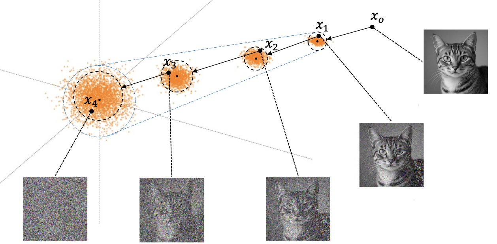
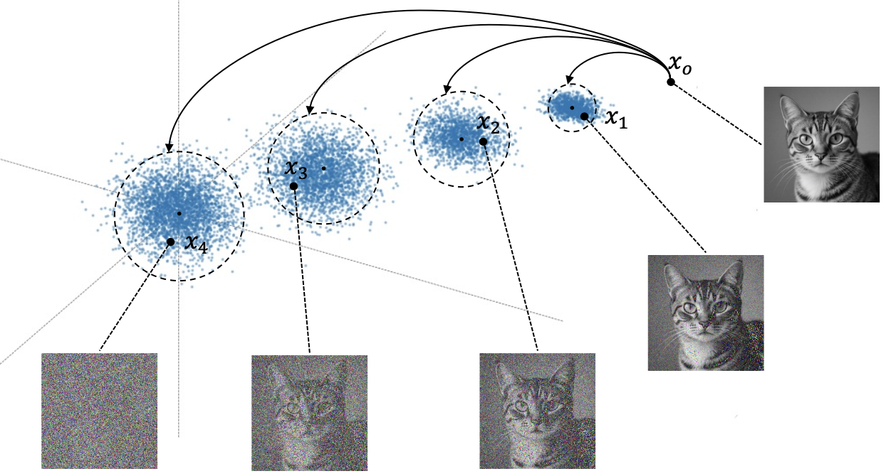

import torch
import torch.nn.functional as F
import numpy as np
def linear_beta_schedule(timesteps, beta_start=0.0001, beta_end=0.02):
"""
Create a linear beta schedule.
Parameters:
timesteps: int
The total number of time steps T.
beta_start: float
The starting value of beta.
beta_end: float
The ending value of beta.
Returns:
beta_schedule: np.array
An array of beta values for each time step.
"""
return np.linspace(beta_start, beta_end, timesteps)
T = 300 # Total diffusion steps
betas = linear_beta_schedule(T) # Linear beta schedule
alphas = 1.0 - betas
alpha_bars = np.cumprod(alphas, axis=0) # Cumulative product of alphas
def forward_diffusion_sample(x_0, t, noise=None):
"""
Perform the forward diffusion process to obtain x_t from x_0.
Parameters:
x_0: torch.Tensor
The original data point (batch_size, data_dim).
t: int
The time step at which to sample x_t.
noise: torch.Tensor or None
Optional noise to add. If None, random noise will be generated.
Returns:
x_t: torch.Tensor
The noised data point at time step t.
"""
if noise is None:
noise = torch.randn_like(x_0)
sqrt_alpha_bar_t = torch.sqrt(alpha_bars[t])[:, None, None, None]
sqrt_one_minus_alpha_bar_t = torch.sqrt(1 - alpha_bars[t])[:, None, None, None]
x_t = sqrt_alpha_bar_t * x_0 + sqrt_one_minus_alpha_bar_t * noise
return x_tDiffusion Models
What is Diffusion Model?
Diffusion models are a class of image generative neural networks inspired by and formulated as a simulation of the thermodynamic diffusion process. The core idea is to model the data generation process as a gradual denoising process, where a neural network learns to reverse a diffusion process that progressively adds noise to the data until it becomes pure noise. By learning this reverse process, the model can generate new data samples from random noise.
SDE: Stochastic Differential Equations
Diffusion models can be mathematically described using Stochastic Differential Equations (SDEs). J. N. Sohl-Dickstein et al. (2015) introduced the concept of diffusion probabilistic models, which can be viewed as a discrete-time approximation of continuous-time SDEs.
A stochastic differential equation (SDE) in one-dimensional space can be expressed as: \[dx = f(x, t)dt + g(t)dW_t \quad dW_t \sim \mathcal{N}(0, dt)\] where: - \(x\) is the state variable (e.g., pixel values of an image). - \(t\) is time. - \(f(x, t)\) is the drift coefficient, representing the deterministic part of the evolution of \(x\) over time. - \(g(t)\) is the diffusion coefficient, representing the stochastic part of the evolution. - \(dW_t\) is the increment of a Wiener process (or Brownian motion), which introduces randomness into the system.
The equation describes how the state variable \(x\) evolves over time under the influence of both deterministic and stochastic components. The drift term \(f(x, t)dt\) captures the systematic changes in \(x\), while the diffusion term \(g(t)dW_t\) captures the random fluctuations.
It is worth noting that when the deterministic component \(f(x,t)\) is negatively correlated with the position variable \(x\), the value of \(x\) will gradually move toward the origin as time progresses. Meanwhile, due to the presence of the stochastic term, \(x\) will eventually undergo random motion around the origin, following a Gaussian distribution.
From SDE to Diffusion Models
In diffusion models, the forward diffusion process can be described by a specific type of SDE. The SDE is defined as: \[dx = -\frac{1}{2}\beta(t)xdt + \sqrt{\beta(t)}dW_t\quad dW_t \sim \mathcal{N}(0, dt)\] where \(\beta(t)\) is a time-dependent function that controls the rate of noise addition over time.
Since \(dW_t\) follows a Gaussian distribution, we can discretize the SDE over small time intervals \(\Delta t\) to obtain the following discrete-time update equation: \[x_{t+\Delta t} = x_t - \frac{1}{2}\beta(t)\cdot x_t \cdot dt + \sqrt{\beta(t)\Delta t}\epsilon, \quad \epsilon \sim \mathcal{N}(0, I)\] where \(\epsilon_t\) is a standard Gaussian noise term.
The following formula can be obtained from the Euler approximation and the Taylor expansion. \[ x_i = \sqrt{1-\beta_i}x_{i-1} + \sqrt{\beta_i}\epsilon_{i-1}, \quad \epsilon_{i-1} \sim \mathcal{N}(0, I) \tag{1}\]
NoteEuler-Maruyama and the Taylor expansion Method
pass
Forward single-step diffusion process
Let \(\beta = 1 - \alpha\) in Equation 1. We can then derive the formula for \(x_i\) corresponding to a given \(x_{i-1}\). Since \(\alpha = [0.99999, \dots, 0.999]\), at each time step, \(x_{t-1}\) is scaled by \(\sqrt{\alpha_t}\) and some noise is added. Because the noise follows a Gaussian distribution, conditioned on \(x_{t-1}\), \(x_t\) also follows a Gaussian distribution \(N\). Then, a random sample from the distribution of \(x_i\) is used as the input for determining \(x_{t+1}\), and this process is iterated step by step. As a result, at each time step, \(x_t\) moves closer to the origin. When \(T\) is sufficiently large, i.e., there are enough time steps, the final \(x_i\) follows a standard normal distribution: \(x_t \sim N(0,1)\). \[ \left\{ \begin{aligned} x_t = \sqrt{\alpha_{t}} \cdot x_{t-1} + \sqrt{ 1- \alpha_{t}} \cdot \epsilon_{t-1} \\ p(x_t|x_{t-1}) \sim \mathcal{N}(\sqrt{\alpha_{t}} \cdot x_{t-1}, 1- \alpha_{t}) \end{aligned} \right. \tag{2}\] where \(\bar{\alpha}_t = \prod_{s=1}^{t} \alpha_s\).

Multi-step forward diffusion process
By recursively applying the single-step diffusion process in Equation 2, we can derive the multi-step forward diffusion process. Specifically, we can express \(x_t\) directly in terms of the original data point \(x_0\) and the accumulated noise over \(t\) steps. This leads to the following equations: \[ \left\{ \begin{aligned} x_t = \sqrt{\bar{\alpha}_{t}} \cdot x_0 + \sqrt{ 1- \bar{\alpha}_{t}} \cdot \epsilon_t \\ p(x_t|x_0) \sim \mathcal{N}(\sqrt{\bar{\alpha}_{t}} \cdot x_0, 1- \bar{\alpha}_{t}) \end{aligned} \right. \tag{3}\] where \(\bar{\alpha}_t = \prod_{s=1}^{t} \alpha_s\). 
Single-step reverse diffusion process
The reverse diffusion process aims to recover the original data point \(x_0\) from the noisy observation \(x_t\). Equation 1 gives us the single-step forward diffusion process, but only in the very first step, that is, when \(x_0\) is considered, \(x_{t-1}\) is a deterministic value. However, in subsequent steps, \(x_{t-1}\) is sampled from a probability distribution, and \(\epsilon\) is also a stochastic value. The computation of \(x_t\) involves combining these two uncertain values through scaling and addition. A single \(x_t\) can correspond to infinitely many possible pairs of \(x_{i-t}\) and \(\epsilon_t\). This means that the neural network would need to learn two uncertain values simultaneously, which is something the network cannot achieve.
For Equation 2, we can derive the reverse process as follows: \[x_0 = \frac{x_t - \sqrt{1 - \bar{\alpha}_{t}}\epsilon_t}{\sqrt{\bar{\alpha}_{t}}}\] Since \(\sqrt{\bar{\alpha}_{t}}\) is nearly zero, our network does not have sufficent precision.
However, if we know the starting point \(x_0\) and the current point \(x_t\), the intermediate point \(x_{t-1}\) becomes a completely determined Gaussian distribution. Its closed-form expression can be derived as follows: \[q(x_{t-1}|x_t, x_0) = \mathcal{N}\left(x_{t-1}; \textcolor{red}{\tilde{\mu}_t(x_t, x_0)}, \textcolor{blue}{\tilde{\beta}_t I}\right)\] where \[ \begin{aligned} \textcolor{red}{\tilde{\mu}_t(x_t, x_0)} &= \frac{\sqrt{\alpha_t}(1 - \bar{\alpha}_{t-1})}{1 - \bar{\alpha}_t} x_t + \frac{\sqrt{\bar{\alpha}_{t-1}}\beta_t}{1 - \bar{\alpha}_t} x_0 \\ &= \frac{\sqrt{\alpha_t}(1 - \bar{\alpha}_{t-1})}{1 - \bar{\alpha}_t} x_t + \frac{\sqrt{\bar{\alpha}_{t-1}}\beta_t}{1 - \bar{\alpha}_t} (\frac{x_t - \sqrt{1 - \bar{\alpha}}\epsilon_t}{\sqrt{\bar{\alpha}_t}}) \\ &= \textcolor{red}{\frac{1}{\sqrt{\alpha_t}} \left( x_t - \frac{1 - \alpha_t}{\sqrt{1 - \bar{\alpha}_t}} \epsilon_t \right)} \\ \end{aligned} \tag{4}\] \[ \textcolor{blue}{\tilde{\beta}_t} = \textcolor{blue}{\frac{1 - \bar{\alpha}_{t-1}}{1 - \bar{\alpha}_t} \beta_t} \tag{5}\]
NoteThe derivation of \(\tilde{\mu}_t\) and \(\tilde{\beta}_t\)
To derive the expressions for \(\tilde{\mu}_t\) and \(\tilde{\beta}_t\), we can apply Bayes’ rule.
Based on the forward process formula \(x_t = \sqrt(\bar{\alpha}_{t})x_0 + \sqrt{1-\bar{\alpha}_{t}}\epsilon_t\), we can derive it as:
By substituting this \(x_0\) into the formula for \(\tilde{\mu}_t\) and simplifying, we get
\[\begin{aligned}
q(x_{t-1}|x_t, x_0) &= q(x_t|x_{t-1})\frac{q(x_{t-1}|x_0)}{q(x_{t}|x_0)} \\
&\propto \exp \Big(-\frac{1}{2}(\frac{\left(x_t - \sqrt{\alpha_t}x_{t-1}\right)^2}{\beta_t} + \frac{\left(x_{t-1} - \sqrt{\bar{\alpha}_{t-1}}x_0\right)^2}{1-\bar{\alpha}_{t-1}} - \frac{\left(x_t - \sqrt{\alpha_t}x_0\right)^2}{1 - \bar{\alpha}_t})\Big) \\
&= exp \Big(-\frac{1}{2} \Big( (\frac{\alpha_t}{\beta_t} + \frac{1}{1-\bar{\alpha}_{t-1}})x_{t-1}^2 - 2(\frac{\sqrt{\alpha_t}x_t}{\beta_t} + \frac{\sqrt{\bar{\alpha}_{t-1}}x_0}{1-\bar{\alpha}_{t-1}})x_{t-1} + C(x_t, x_0) \Big) \Big) \\
\end{aligned}\]
According the standard form of Gaussian distribution, we can identify the mean and variance as follows:
\[ \textcolor{red}{\tilde{\mu}_t(x_t, x_0)} = (\frac{\sqrt{\alpha_t}x_t}{\beta_t} + \frac{\sqrt{\bar{\alpha}_{t-1}}x_0}{1-\bar{\alpha}_{t-1}})/(\frac{\alpha_t}{\beta_t} + \frac{1}{1-\bar{\alpha}_{t-1}})\]
\[ \textcolor{blue}{\tilde{\beta}_t} = 1/(\frac{\alpha_t}{\beta_t} + \frac{1}{1-\bar{\alpha}_{t-1}}) = \textcolor{blue}{\frac{1 - \bar{\alpha}_{t-1}}{1 - \bar{\alpha}_t} \beta_t}\]
\[ x_0 = \frac{x_t-\sqrt{1-\bar{\alpha}_{t}}\epsilon}{\sqrt{\bar{\alpha}_{t}}} \]
\[ \textcolor{red}{\mu_t(x_t, t) = \frac{1}{\sqrt{\alpha_t}} \left( x_t - \frac{1-\alpha_t}{\sqrt{1 - \bar{\alpha}_t}} \epsilon(x_t, t) \right)} \]
DDPM: Denoising Diffusion Probabilistic Models
Forward diffusion process
The forward diffusion process is essentially as Markov chain that gradually adds Gaussian noise to the data over a series of time steps until the data is completely transformed into pure random noise.
Single-step noise addition
Given a data point \(x_0 \sim q(x)\) from the data distribution, the forward diffusion process adds noise in \(T\) discrete time steps. At each time step \(t\), Gaussian noise is added to the data point according to a variance schedule \(\beta_t = (\beta_1, \beta_2, \ldots, \beta_T)\). The noise addition at each step can be described by the following equation: \[q(x_t|x_{t-1}) = \mathcal{N}(x_t; \sqrt{1-\beta_t}x_{t-1}, \beta_t I)\]
where \(\beta_t\) is the variance schedule at time step \(t\),which means at each time step, how much Gaussian noise is added to the data point and normally is chosen to be a small positive value. Meanswhile, \(I\) is the identity matrix, ensuring that the noise is isotropic (i.e., the same in all directions). Expected mean of \(x_t\) is scaled version of \(x_{t-1}\) by \(\sqrt{1-\beta_t}\), which ensures that as more noise is added, the original data point’s influence diminishes.
If we use the reparameterization trick, we can directly express the relation between \(x_t\) and \(x_{t-1}\) and further more between \(x_t\) and \(x_0\): \[x_t = \sqrt{1-\beta_t}x_{t-1} + \sqrt{\beta_t}\epsilon_{t-1}, \quad \epsilon_{t-1} \sim \mathcal{N}(0, I)\] \[x_t = \sqrt{\bar{\alpha}_t}x_0 + \sqrt{1-\bar{\alpha}_t}\epsilon, \quad \epsilon \sim \mathcal{N}(0, I)\] where \(\alpha_t = 1 - \beta_t\) and \(\bar{\alpha}_t = \prod_{s=1}^{t} \alpha_s\).
NoteConversion from a distribution to an equation (The Reparameterization)
In the paper Ho, Jain, and Abbeel (2020), the authors define the forward diffusion process using a Gaussian distribution: \[q(x_t|x_{t-1}) = \mathcal{N}(x_t; \underbrace{\sqrt{1-\beta_t}x_{t-1}}_{\text{mean}\,\mu}, \underbrace{\beta_t I}_{\text{variance}\,\sigma^2})\] It means \(x_t \sim \mathcal{N}(\mu,\sigma^2)\), and any variable that follows a Gaussian distribution can be expressed as: \[ X = \mu + \sigma \odot \epsilon, \quad \epsilon \sim \mathcal{N}(0, I) \]
In our case, we have: \[ \mu = \sqrt{1-\beta_t}x_{t-1}, \quad \sigma = \sqrt{\beta_t} \] Thus, we can rewrite the forward diffusion step as: \[ \begin{aligned} x_t = \mu + \sigma \odot \epsilon = \sqrt{1-\beta_t}x_{t-1} + \sqrt{\beta_t}\epsilon, \quad \epsilon \sim \mathcal{N}(0, \mathbf{I}) \end{aligned} \]
Otherwise, we can also express \(x_t\) directly in terms of \(x_0\): \[ \begin{aligned} x_t &= \sqrt{\alpha_t}x_{t-1} + \sqrt{1-\alpha_t}\epsilon_{t-1} \\ &= \sqrt{\alpha_t}(\sqrt{\alpha_{t-1}}x_{t-2} + \sqrt{1-\alpha_{t-1}}\epsilon_{t-2}) + \sqrt{1-\alpha_t}\epsilon_{t-1} \\ &= \sqrt{\alpha_t \alpha_{t-1}}x_{t-2} + \sqrt{\alpha_t(1-\alpha_{t-1})}\epsilon_{t-2} + \sqrt{1-\alpha_t}\epsilon_{t-1} \\ \end{aligned} \]
Since \(\epsilon_{t-2}\) and \(\epsilon_{t-1}\) are both independent and identically distributed as \(\mathcal{N}(0, I)\), according to the additivity property of Gaussian distributions: \[\mathcal{N}(\mu_1, \sigma_1^2) + \mathcal{N}(\mu_2, \sigma_2^2) = \mathcal{N}(\mu_1 + \mu_2, \sigma_1^2 + \sigma_2^2)\] We can combine the noise terms: \[ \sqrt{\alpha_t(1-\alpha_{t-1})}\epsilon_{t-2} + \sqrt{1-\alpha_t}\epsilon_{t-1} \sim \mathcal{N}\left(0, \alpha_t(1-\alpha_{t-1})I + (1-\alpha_t)I\right) = \mathcal{N}\left(0, (1 - \alpha_t \alpha_{t-1})I\right) \] Therefore: \[ \begin{aligned} x_t &= \sqrt{\alpha_t \alpha_{t-1}}x_{t-2} + \sqrt{1 - \alpha_t \alpha_{t-1}}\bar{\epsilon}\\ &=\dots \\ &= \sqrt{\bar{\alpha}_t}x_0 + \sqrt{1-\bar{\alpha}_t}\epsilon, \quad \epsilon \sim \mathcal{N}(0, \mathbf{I}) \\ \end{aligned} \] where \(\alpha_t = 1 - \beta_t\) and \(\bar{\alpha}_t = \prod_{s=1}^{t} \alpha_s\).
NoteWhat is reparameterization and Why use it?
In deep generative models, we often need to sample from a probability distribution that depends on some parameters. For example, in diffusion models, a neural network predicts the mean \(\mu\) and variance \(\sigma^2\) of a Gaussian distribution at each time step, and then we need to sample a variable \(x_t\) from \(\mathcal{N}(\mu, \sigma^2)\).
However, sampling directly from this distribution can make it difficult to compute gradients with respect to the parameters during training. Suppose our neural network has parameters \(\theta\), and we want to compute the gradient of some loss function \(L\) with respect to \(\theta\). If we sample \(x_t\) directly from \(\mathcal{N}(\mu_\theta, \sigma^2_\theta)\), the sampling operation is not a function, which introduces randomness that breaks the gradient flow, making it impossible to compute \(\nabla_\theta L\). The fatal problem is that the sampling operation is not differentiable.
The core idea of the reparameterization trick is to seperate the randomness from the parameters by expressing the random variable \(x_t\) as a deterministic function of the parameters and an independent noise variable. For a Gaussian distribution, we can express the sampling operation as:\[x_t = \mu_\theta + \sigma_\theta \cdot \epsilon, \quad \epsilon \sim \mathcal{N}(0, 1)\] Here, \(\epsilon \sim \mathcal{N}(0, 1)\), which is a random variable drawn from a standard normal distribution and independent of the parameters \(\theta\). This way, the randomness is isolated in \(\epsilon\), and the rest of the expression is a deterministic function of \(\theta\). It can be described by the following: \[x_{t} = \mu_{\theta} + \sigma_{\theta} \odot \epsilon\]
Now, we can sample \(x_t\) by sampling \(\epsilon\) from a fixed distribution (standard normal) and then applying the deterministic transformation. This allows us to compute gradients with respect to \(\theta\) during backpropagation, as the sampling operation is now differentiable with respect to the parameters, which \(\nabla_\mu x_{t} = 1\) and \(\nabla_\sigma x_{t} = \epsilon\).
We also can compare two methods below in Pytorch:
import torch
mu = torch.tensor([1.0], requires_grad=True)
sigma = torch.tensor([0.5], requires_grad=True)
# Direct sampling (not differentiable)
distribution = torch.distributions.Normal(mu, sigma)
x_direct = distribution.sample() # sample() for non-differentiable case
# x_direct = distribution.rsample() # rsample() for reparameterized case
loss_direct = (x_direct - 2.0) ** 2
# loss_direct.backward() # This would fail to compute gradients, if using rsample(), it works
# Reparameterization trick (differentiable)
epsilon = torch.randn(1)
x_reparam = mu + sigma * epsilon # reparameterized sample
loss_reparam = (x_reparam - 2.0) ** 2
loss_reparam.backward() # This works
print(mu.grad) # Gradient with respect to mu
print(sigma.grad) # Gradient with respect to sigmaWe can implement the forward process using PyTorch as follows:
Reverse diffusion process
In the process of forward diffusion, we defined how to gradually add Gaussian noise to the data using \(q(x_t|x_{t-1})\). The reverse diffusion process aims to reverse this noising process, gradually removing the noise to recover the original data from pure noise by using its reverse conditional distribution \(q(x_{t-1}|x_t)\). If we can accurately model this reverse process, we can start from random noise \(x_T \sim \mathcal{N}(0, I)\) and iteratively sample \(x_{T-1}, x_{T-2}, \ldots, x_0\) to generate new data samples that resemble the original data distribution.
Can we directly compute the reverse conditional distribution？
In theory, if we have access to the true data distribution and the forward process, we can compute the reverse conditional distribution \(q(x_{t-1}|x_t)\) using Bayes’ theorem: \[q(x_{t-1}|x_t) = \frac{q(x_t|x_{t-1})q(x_{t-1})}{q(x_t)}\] However, in practice, this is infeasible for several reasons:
Unknown Data Distribution: We typically do not have access to the true data distribution \(q(x - 1)\). The reason is that we only have a finite dataset of samples from the data distribution, not the distribution itself.
Intractable Integrals: The denominator \(q(x_t)\) is referred to as the marginal distribution of \(x_t\). If we want to compute the probability at a specific time step \(t\), we need to integrate over all possible previous states \(x_{t-1}\): \[q(x_t) = \int q(x_t|x_{t-1})q(x_{t-1})dx_{t-1}\] This integral is often intractable, especially in high-dimensional spaces, which is called the “curse of dimensionality”.
Due to these challenges, we cannot directly compute \(q(x_{t-1}|x_t)\) and instead need to approximate it using a parameterized model, such as a neural network.
Using a neural network to approximate the reverse process
We can use a neural network with parameters \(\theta\) to approximate the reverse conditional distribution. When the diffusion step size \(\beta_t\) is sufficiently small, the reverse process \(q(x_{t-1} \mid x_t)\) also follows a Gaussian distribution. Therefore, we can define the neural network outputs as the parameters of this Gaussian distribution: \[ p_\theta(x_{0:T}) = p(x_T) \prod_{t=1}^{T} p_\theta(x_{t-1}|x_t) \quad p_\theta(x_{t-1}|x_t) = \mathcal{N}(x_{t-1}; \mu_\theta(x_t, t), \Sigma_\theta(x_t, t)) \] where \(\mu_\theta(x_t, t)\) and \(\Sigma_\theta(x_t, t)\) are the mean and covariance predicted by the neural network for the reverse step from \(x_t\) to \(x_{t-1}\).
What is more, in the paper Ho, Jain, and Abbeel (2020), the authors find that using a fixed covariance \(\Sigma_\theta(x_t, t) = \beta_t I\) works well in practice, simplifying the model to only predict the mean \(\mu_\theta(x_t, t)\), which is the main focus of the training process.
Now, we can train the neural network to learn the parameters \(\theta\) such that the reverse process \(p_\theta(x_{t-1}|x_t)\) closely approximates the true but unknow reverse conditional distribution \(q(x_{t-1}|x_t)\). To train the model, we aim to maximize the log-likelihood of the real data \(x_0\) under the model, \(\log p_\theta(x_0)\). Because direct likelihood optimization is intractable, we resort to Jensen’s inequality and optimize the corresponding Evidence Lower Bound (ELBO): \[- \log p_\theta(x_0) \le \mathbb{E}_{q} \left[ \log \frac{q(x_{1:T}|x_0)}{p_\theta(x_{0:T})} \right] = \text{ELBO}\]
To convert each term in the equation to be analytically computable, the objective can be further rewritten to be a combination of several KL-divergence and entropy terms (See the detailed step-by-step process in J. Sohl-Dickstein et al. (2015)): \[\small \text{ELBO} = \mathbb{E}_{q} \left[ \underbrace{D_{KL}(q(x_T|x_0) || p_\theta(x_T))}_{L_T} + \sum_{t=2}^{T} \underbrace{D_{KL}(q(x_{t-1}|x_t, x_0) || p_\theta(x_{t-1}|x_t))}_{L_{t-1}} \underbrace{- \log p_\theta(x_0|x_1)}_{L_0} \right]\] where \(D_{KL}(P||Q)\) is the Kullback-Leibler divergence between two distributions \(P\) and \(Q\).
Although the \(q(x_{t-1}|x_t)\) is intractable, \(q(x_{t-1}|x_t, x_0)\) is tractable because we condition on the original data point \(x_0\). While \(x_0\) is unknown at inference time, it is available during training as part of the dataset. Following the Equation 4 and Equation 5, we can derive the closed-form expression for \(q(x_{t-1}|x_t, x_0)\) as a Gaussian distribution with mean \(\tilde{\mu}_t(x_t, x_0)\) and variance \(\tilde{\beta}_t I\).
Now, our current goal is to have the neural network \(p_\theta \sim \mathcal{N}\left(\mu_\theta,\Sigma_\theta\right)\) approximate the true distribution \(q(x_{t-1}|x_t, x_0) \sim \mathcal{N}\left(\tilde{\mu}_t, \tilde{\beta}_t\right)\). Since the parameter \(\Sigma_\theta\) is often fixed as \(\beta_t I\), we mainly focus on training the neural network to predict the mean \(\textcolor{red}{\mu_\theta}\) to be as close as possible to the true mean \(\textcolor{red}{\tilde{\mu}_t = \frac{1}{\sqrt{\alpha_t}} \left( x_t - \frac{1 - \alpha_t}{\sqrt{1 - \bar{\alpha}_t}} \epsilon_t \right)}\).
The equation means that to accurately predict the mean \(\mu_\theta\), the neural network only needs to predict the noise \(\epsilon_\theta\) present in the current image.
This can be achieved by minimizing the KL-divergence between these two distributions:
\[ \begin{aligned} L_{t} &= \mathbb{E}_{x_0,\epsilon} \left[D_{KL}(q(x_{t-1}|x_t, x_0) || p_\theta(x_{t-1}|x_t))\right]\\ &= \mathbb{E}_{x_0,\epsilon} \left[\frac{1}{2\|\Sigma_{\theta}(x_t,t)\|_2 ^ 2}\| \tilde{\mu}_t(x_t, x_0) - \mu_\theta(x_t, t) \|^2\right]\\ &= \mathbb{E}_{x_0,\epsilon} \left[\frac{1}{2\|\Sigma_{\theta}(x_t,t)\|_2 ^ 2}\| \frac{1}{\sqrt{\alpha_t}} \left( x_t - \frac{1 - \alpha_t}{\sqrt{1 - \bar{\alpha}_t}} \epsilon_t \right) - \frac{1}{\sqrt{\alpha_t}} \left( x_t - \frac{1 - \alpha_t}{\sqrt{1 - \bar{\alpha}_t}} \epsilon_\theta(x_t, t) \right) \|^{2}\right]\\ &= \mathbb{E}_{x_0,\epsilon} \left[\frac{(1-\alpha_t)^2}{2\alpha_t(1-\bar{\alpha}_t)\| \Sigma_\theta \|_2^2} \left\lVert \epsilon_t - \epsilon_\theta(x_t,t) \right\rVert^2 \right] \\ &= \mathbb{E}_{x_0,\epsilon} \left[ \frac{(1-\alpha_t)^2} {2\alpha_t(1-\bar{\alpha}_t)\left\lVert \Sigma_\theta \right\rVert _2^2} \left\lVert \epsilon_t - \epsilon_\theta\!\left( \sqrt{\bar{\alpha}_t} x_0 + \sqrt{1-\bar{\alpha}_t}\,\epsilon_t, t \right) \right\rVert^2 \right] \end{aligned} \]
Ho, Jain, and Abbeel (2020) further simplifies the loss function by removing the weighting term, leading to a more straightforward objective:
\[ \boxed {\textcolor{red}{L_t^{simple} = \mathbb{E}_{x_0,\epsilon,t} \left[\left\lVert \epsilon_t - \epsilon_\theta(x_t,t) \right\rVert^2\right]}} \]
The final training objective is:
\[ L_{simple} = L_t^{simple} + C \]
where \(C\) is a constant that does not depend on the model parameters \(\theta\) and can be ignored during optimization.

Sampling from the trained model
Once the neural network which can predict the noise \(\epsilon_\theta(x_t, t)\) is trained, we can use it to sample new data points by reversing the diffusion process. Starting from pure Gaussian noise \(x_T \sim \mathcal{N}(0, I)\), we iteratively apply the reverse diffusion steps using the learned model.
\[ x_{t-1} = \frac{1}{\sqrt{\alpha_t}} \left( x_t - \frac{1 - \alpha_t}{\sqrt{1 - \bar{\alpha}_t}} \epsilon_\theta(x_t, t) \right) + \sigma_t z \]
where \(z \sim \mathcal{N}(0, I)\) is random noise added at each step to maintain stochasticity, and \(\sigma_t\) is a scaling factor that can be adjusted based on the desired level of noise during sampling.
NoteWhy we need to add \(\sigma_t z\)？
This term corresponds to Langevin dynamics. Without it, the sampling process becomes a deterministic numerical procedure, which often leads to overly smooth images with a lack of fine details. Introducing stochastic perturbations helps correct estimation errors at each step and enables the generative model to better explore the true image manifold.
How to train the model
We get the simplified loss function as follows:
\[ L_{simple} = \left\|\epsilon_t - \epsilon_\theta(x_t,t) \right\|^2 \]
This means that the training procedure consists of only four steps:
Random sampling: Randomly sample a data point \(x_0\) from the training dataset.
Random timestep: Select a random time step $ t $.
Add noise in the forward process: Generate a noisy version of the data point \(x_t\) using the forward diffusion equation:
\[ x_t = \sqrt{\bar{\alpha}_t}x_0 + \sqrt{1-\bar{\alpha}_t}\epsilon_t, \quad \epsilon_t \sim \mathcal{N}(0, I)\]
Train the model: Use the noisy image \(x_t\) and the corresponding noise \(\epsilon_t\) to train the neural network \(\epsilon_\theta(x_t, t)\) to predict the noise.
Loss computation: Compute the loss using the simplified loss function:
\[ L_{simple} = \left\|\epsilon_t - \epsilon_\theta(x_t,t) \right\|^2 \]
References
Ho, Jonathan, Ajay Jain, and Pieter Abbeel. 2020. “Denoising Diffusion Probabilistic Models.” arXiv Preprint arXiv:2006.11239.
Sohl-Dickstein, Jascha Narain, Eric A. Weiss, Niru Maheswaranathan, and Surya Ganguli. 2015. “Deep Unsupervised Learning Using Nonequilibrium Thermodynamics.” ArXiv abs/1503.03585. https://api.semanticscholar.org/CorpusID:14888175.
Sohl-Dickstein, Jascha, Eric A. Weiss, Niru Maheswaranathan, and Surya Ganguli. 2015. “Deep Unsupervised Learning Using Nonequilibrium Thermodynamics.” https://arxiv.org/abs/1503.03585.